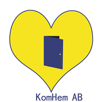

Företaget startades 2013 av Tamrat micheal som tidigare jobbat med ensamkommande barn som ansöker eller har fått uppehållstillstånd. Genom företaget skall det skapas en helhetsbild av barnets behov, där man arbetar med alla områden i barnets liv. Oavsett om detta är en barn som fått uppehållstillstånd eller avslag. Kom Hem AB arbetar med placeringar av barn och unga i enlighet med Socialtjänstlagen och Lagen om vård av unga. Kom Hem AB erbjuder konsulentstödda familjehem till barn och ungdomar. Våra familjehem är noggrant utvalda och har olika bakgrund samt ursprung. Vi anser att det viktigt med mångfald för att kunna matcha varje barns behov. När ett barn flyttar till familjehem är det viktigt att förstå att den befinner sig i en väldigt otrygg och instabil situation. Våra familjer är förberedda för utmaningen och redo för att bidra med ungdomens utveckling samt ge den trygghet ungdomen behöver. Med hjälp av våra erfarna konsulenter och handledare fungerar vi som avlastning för kommunerna samt ger kontinuerligt stöd till de olika familjehemmen. Kom Hem AB har stor kunskap och erfarenhet av ensamkommande. 
Våra värdeord är TRYGGHET, TILLIT, NÄTVERK, och DELAKTIGHET. Alla familjer delar ett gemensamt intresse för att stödja barn och unga i de utsatta situationer de befinner sig i. Vårt arbete är kontinuerliga kontakter, där vi aktivt arbetar med att stödja den unge, likväl som familjen för att de skall uppleva just trygghet, tillit och delaktighet. Vårt arbete för att skapa ett nätverk kring den unge är grunden till att våra ungdommar inte bara får en plats att bo, utan en tilhörighet och ett stort antal människor som hjälper till för att den unge skall finna sin plats i samhället. Vi vill i slutändan uppnå resultatet där ungdomen är självständig och upplever att hen tillsammans med familjen och Kom Hem kan forma sin vardag.